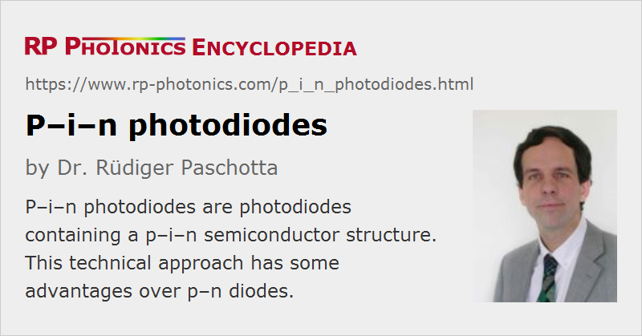

p–i–n Photodiodes
Definition: photodiodes with a p–i–n semiconductor structure
Alternative term: PIN photodiodes
More general term: photodiodes
German: PIN-Photodioden
How to cite the article; suggest additional literature
Author: Dr. Rüdiger Paschotta
A p–i–n photodiode, also called PIN photodiode, is a photodiode with an intrinsic (i) (i.e., undoped) region in between the n- and p-doped regions. Most of the photons are absorbed in the intrinsic region, and carriers generated therein can efficiently contribute to the photocurrent. In Figure 1, the electrodes are shown in black: the cathode is a flat electrode, whereas the anode has the form of a ring (of which two opposite parts are seen in the shown cross section). The positive pole of the (reverse) bias voltage is connected to the cathode. On top of the p region, there is an anti-reflection coating.
Advantages of the p–i–n Design

Ordinary p–n photodiodes can suffer from the following problems:
- The width of the depletion region may be well below the absorption length, so that only some fraction of the generated photocarriers are generated within the depletion region. The collection of the carriers generated outside the depletion region may be limited, leading to a reduced quantum efficiency.
- Even for those carriers generated outside the depletion region which eventually diffuse into the depletion region and can thus contribute to the photocurrent, that diffusion takes some time; that results in a tail in the impulse response function, which can limit the detection bandwidth.
These problems can be mitigated or avoided with p–i–n photodiode design. There, most carriers are generated in the intrinsic region, because that can be much thicker than the depletion region of a p–n structure. Another effect of the thick intrinsic region can be the reduced capacitance, which allows for a higher detection bandwidth.
Some p–i–n diodes are made from different semiconductor materials, where the band gap energy is below the photon energy only for the intrinsic region, but not for the p and n regions. In that case, any absorption outside the intrinsic region can be avoided.
The fastest p–i–n photodiodes have bandwidths well above 100 GHz. Their active areas typically have a diameter of only a few microns. They are often made in fiber-coupled form and can be applied e.g. in receivers for optical fiber communications; the achieved bit rates can be as high as 160 Gbit/s.
Materials for p–i–n Photodiodes
Some p–i–n diodes are based on silicon. They are sensitive throughout the visible spectral region and in the near infrared up to ≈ 1 μm. At longer wavelengths, the absorption efficiency and thus the responsivity drops sharply, but the parameters of that cut-off depend on the thickness of the intrinsic region.
For longer wavelengths up to ≈ 1.7 μm (or with extended spectral response up to 2.6 μm), InGaAs p–i–n diodes are available, although at significantly higher prices (particularly for large active areas). Small InGaAs photodiodes can be extremely fast.
Germanium p–i–n diodes can be a cheaper alternative to InGaAs diodes, but they have a much slower response and exhibit a much larger dark current.
Suppliers
The RP Photonics Buyer's Guide contains 16 suppliers for p--i--n photodiodes.
Questions and Comments from Users
Here you can submit questions and comments. As far as they get accepted by the author, they will appear above this paragraph together with the author’s answer. The author will decide on acceptance based on certain criteria. Essentially, the issue must be of sufficiently broad interest.
Please do not enter personal data here; we would otherwise delete it soon. (See also our privacy declaration.) If you wish to receive personal feedback or consultancy from the author, please contact him e.g. via e-mail.
By submitting the information, you give your consent to the potential publication of your inputs on our website according to our rules. (If you later retract your consent, we will delete those inputs.) As your inputs are first reviewed by the author, they may be published with some delay.
See also: photodiodes, metal–semiconductor–metal photodetectors
and other articles in the category photonic devices
|  |
If you like this page, please share the link with your friends and colleagues, e.g. via social media:
These sharing buttons are implemented in a privacy-friendly way!